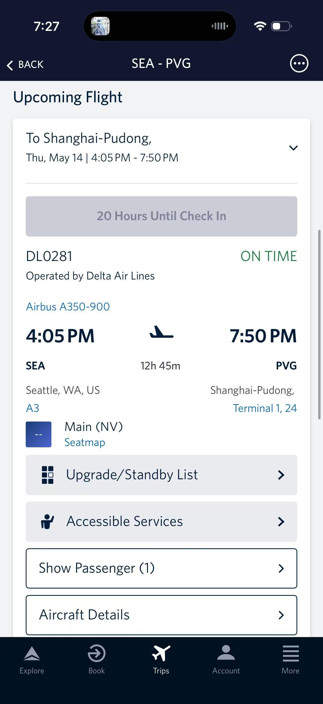
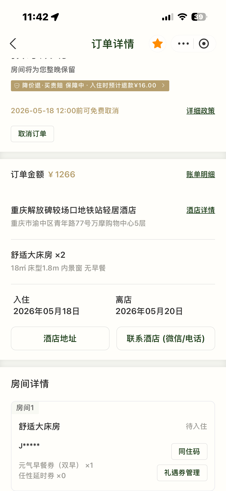

China Trip · May 14–24, 2026
中国行程 · 2026年5月14日–24日
Los Angeles → Seattle → Shanghai → Chongqing → Xi'an → Beijing → Seoul → LA. Bilingual day-by-day, friends joining from Chongqing onward.
洛杉矶 → 西雅图 → 上海 → 重庆 → 西安 → 北京 → 首尔 → 洛杉矶。双语日程，国内朋友自重庆起会合。
Plan updated 2026-05-13 · 计划已更新:
Latest decisions locked in: Friday May 15 night = INS Land club, Saturday May 16 night = Anthologia (Diamond League dropped), Sunday May 17 = Xu Yan royal banquet, teamLab Borderless closed (Feb 2024). Forbidden City dropped — noon departure May 24.
最新锁定：5月15日晚 INS Land，5月16日晚 Anthologia（钻石联赛取消），5月17日徐宴，无界美术馆已闭馆。5月24日中午离京，故宫舍去。
🚗 Airport pickup arranged · PVG 接机已安排:
A friend has scheduled a car at PVG Terminal 1. Look for the driver holding a sign with the plate number (friend will text the plate before landing). Walk straight out with the driver — luggage stays in the car.
朋友已安排接机：抵达浦东 T1 后寻找举着车牌号码牌的司机，朋友会在落地前发车牌号给你。直接跟司机走，行李上车。
Status & decisions 状态与决定
Outbound · 出发
Thu May 14 · LAX 12:10 → SEA → DL0281 → PVG Fri May 15 19:50 5月14日中午洛杉矶起飞，5月15日晚抵沪
Return · 回程
Sun May 24 · noon departure · PKX/PEK → ICN → SEA/LAX 5月24日中午离京，经首尔回美
Cross the date line — arrive Friday evening Shanghai time. 跨越国际日期变更线，周五傍晚抵沪。
Return leg 1 · 回程第一段
MU2073 · China Eastern · Airbus A321
PKXBeijing DaxingSun May 24 · 11:45
✈
ICNSeoul IncheonSun May 24 · 14:50
~3h 5m
⌛ Transfer in Seoul · 4h 10m layover · 首尔转机 4小时10分钟
Return leg 2 · 回程第二段
DL0196 · Delta Air Lines · Airbus A350-900
ICNSeoul IncheonSun May 24 · 19:00
✈
SEASeattle (then onward)Sun May 24 · 13:11
Same calendar day in Seattle (crosses date line) · 当日抵达
May 24 departure logistics · 5月24日 离京安排:
Noon flight. Sunday traffic is brutal. Leave the hotel by ~7:30 AM, allow 3-hour buffer to PKX (~60 km south of Beijing). No Forbidden City this trip.
周日中午航班，路况不可预测。早7:30前出发，预留3小时缓冲。本程无故宫。
Flight screenshots · 航班截图

SEA → PVG leg · DL0281 · from Delta app

Return · PKX → ICN → SEA · from Flying Blue
Hotels 酒店预订
Shanghai & Chongqing hotels set. Xi'an + Beijing TBD — locals will pick once everyone joins up. 上海、重庆已定；西安、北京酒店待友人到位后再定。
To book · 待订
Shanghai · 上海
3 nights · May 15–18 · arrive PVG May 15 evening 3晚 · 5月15–18日 · 5月15日晚抵沪
Xu Yan royal banquetFriend handling · backup Fu He Hui
HSR Xi'an → Beijing · May 22 afternoon
INS Land · Fri May 15 — walk-in, no booking needed
Xi'an Chang Hen Ge show + Shaanxi History Museum + calligraphyWith friends
Beijing Xiao Da Dong + dumpling class + cupping/tui na + Mutianyu transportWith friends
Day-by-day 每日行程
Day 1 May 14 · Thursday · Travel day 5月14日 周四 起飞日
12:10 PT — LAX → SEA on DL1045 (~1h layover)中午12:10 洛杉矶→西雅图 DL1045（西雅图转机约1小时）16:05 PT — SEA → PVG on DL0281, A350-900, 12h 45m. Try to sleep. Cross the date line.下午4:05 西雅图→上海 DL0281 · 12小时45分 · 机上过夜
Day 2 May 15 · Friday · Arrival + INS Land 5月15日 周五 抵沪 + INS Land
19:50 — Land PVG Terminal 1, Gate 24晚7:50 抵达浦东 T1 24号登机口~20:30 — Friend's driver picks you up at T1 (plate-number sign). Luggage stays in car.约8:30 朋友的司机在T1接机（举牌），行李上车~21:30 — Quick late dinner near hotel: xiaolongbao 小笼包 or noodle spot约9:30 酒店附近吃小笼包或面Late — INS Land — multi-story club, 109 Yandang Rd 雁荡路 (Fuxing Park, Huangpu). ¥288 Fri entry. Open until 6 AM.深夜：INS Land 多层夜店 · 雁荡路109号（复兴公园 黄浦区）· 周五¥288 · 通宵至凌晨6点
Heads up · 提示
If jet lag hits hard, skip the club and sleep — the night is yours. 若严重时差，可放弃夜店直接休息
Day 3 May 16 · Saturday · French Concession + Anthologia 5月16日 周六 法租界 + Anthologia
AM — Anfu Rd 安福路 / French Concession. Coffee, plane trees, slow morning.上午：安福路 / 法租界 · 咖啡 · 法桐 · 慢晨11 AM – 3 PM — Photographer block (~4h) — Anfu → Bund → Tianzifang (book via Xiaohongshu)11:00–15:00 约拍4小时：安福路→外滩→田子坊（小红书预约）Late afternoon — Tianzifang 田子坊 for boutique browsing傍晚：田子坊逛店4–6 PM — Back to hotel for a REAL nap. Anthologia runs late.16:00–18:00 回酒店睡觉，Anthologia 结束很晚6:15 PM — Leave for Anthologia (Xingfu Li 幸福里, 381 Panyu Rd 番禺路, Changning) — ~25 min from Bund, Saturday traffic unforgiving18:15 出发前往 Anthologia（长宁番禺路381号幸福里，约25分钟车程，周六堵车）🍣 7:00 PM SHARP — Anthologia · 8-course immersive omakase · 46 seats · ~¥980 · doors close on time19:00 准时：Anthologia · 8道沉浸式 omakase · 46座 · 约¥980 · 准点关门Late — Drinks: Speak Low or Sober Company in Jing'an, or back to a Bund rooftop夜场：Speak Low / Sober Company（静安）或外滩天台
Day 4 May 17 · Sunday · Shanghai wrap 5月17日 周日 上海收尾
AM — AP Plaza 名品广场 (Pudong, inside Science & Technology Museum metro stop). Bring cash, haggle hard.上午：AP 名品广场（浦东科技馆地铁站内）· 现金 · 砍价Midday — Power Station of Art 当代艺术博物馆 or Long Museum West Bund 龙美术馆 西岸馆 (replaces teamLab, which closed Feb 2024)中午：当代艺术博物馆 或 龙美术馆西岸馆（无界已闭馆）Late PM — Rest at hotel. Spa or nap before banquet.下午：酒店休息 · 准备晚宴Dinner — Xu Yan / Gong Yan 徐宴 / 宫宴 royal banquet Friend booking · Backup: Fu He Hui 福和慧 Michelin 2★ vegetarian晚餐：徐宴 / 宫宴 皇家宴（朋友订）· 备选福和慧（米其林二星素食）Late — Niang Qin 娘亲 TCM bar — pulse-read herbal cocktails. Last Shanghai nightcap.夜场：娘亲 · 把脉中药鸡尾酒 · 上海最后一夜
Day 5 May 18 · Monday · Shanghai → Chongqing 5月18日 周一 上海→重庆
AM — Morning flight Shanghai → Chongqing (~3 hr). Check out of Atour.上午：飞重庆（约3小时）· 退房PM — Check in Light Stay 轻居 Jiefangbei 解放碑下午：入住轻居酒店 解放碑较场口店Evening — Hongyadong 洪崖洞 at dusk · 11-story cliffside complex, lights flip on at sunset傍晚：洪崖洞日落 · 11层崖壁建筑 · 入夜亮灯Late — Bayi Road 八一路 street food. Skewers, suanlafen 酸辣粉, sweet potato pancakes.夜宵：八一路小吃 · 串串 · 酸辣粉 · 糖油糍粑
Optional rooftop · 江景天台
Bar 62 — high-floor view of Jiefangbei skyline
M1NT Chongqing — stylish rooftop
Day 6 May 19 · Tuesday · Big Chongqing day (with friends) 5月19日 周二 重庆大日（友人会合）
Breakfast — Xiaomian 小面 (Chongqing chili noodles). Hit a local stall, let friends pick.早餐：重庆小面 · 友人带路Late AM — Liziba monorail 李子坝穿楼轻轨 — train through a building · ~10 min photo stop上午：李子坝穿楼轻轨（拍照10分钟）Midday — Yangtze cableway 长江索道 + Chaotianmen 朝天门 two-rivers confluence中午：长江索道 + 朝天门两江交汇Afternoon — Chongqing Zoo pandas 重庆动物园 (~1.5 hr, timed entry). No Chengdu side trip needed.下午：重庆动物园熊猫（约1.5小时，预约制）· 无需去成都Dinner — hotpot + face-changing 变脸 + rabbit head 兔头. Order 鸳鸯锅 (split spicy/mild).晚餐：火锅 + 变脸表演 + 兔头 · 点鸳鸯锅Late — 9th St clubs 九街 → all-night KTV 通宵KTV. Pace yourself — 8 AM train tomorrow.夜场：九街夜店 → 通宵KTV · 注意节制，明早8点高铁
Clubs 九街
ESMi · SPACE · PLAY HOUSE · Xingxing Dibao 星星地堡
Air raid shelter bars 防空洞 · True Color 真彩 · Code Bar
24-hour KTV: Party World / 麦颂
Day 7 May 20 · Wednesday · Chongqing → Xi'an 5月20日 周三 重庆→西安
8:00 AM — HSR Chongqing → Xi'an (~4.5 hr, arrive ~12:30 PM)早8:00 重庆→西安高铁（约4.5小时，约12:30抵达）PM — Meet up with Xi'an friends. Plan flexes with locals下午：与西安朋友会合 · 计划随友人调整
Day 8 May 21 · Thursday · Xi'an: Warriors + Hot Springs 5月21日 周四 西安：兵马俑 + 华清宫Tentative
AM — Terracotta Army 兵马俑. Early to beat the buses.上午：兵马俑（早去避开旅游团）PM — Huaqing Hot Springs 华清宫 · 10 min from the warriors, same trip下午：华清宫（兵马俑10分钟车程）PM — Xi'an City Wall 西安城墙 walk · sunset on the wall傍晚：西安城墙 · 城上日落Eve — Chang Hen Ge 长恨歌 night show at Huaqing With friends晚：长恨歌夜场实景演出（友人安排）Or — Muslim Quarter 回民街 · rou jia mo 肉夹馍 · biang biang noodles · persimmon cakes · lamb skewers或：回民街 · 肉夹馍 · biang biang 面 · 柿饼 · 羊肉串
Day 9 May 22 · Friday · Xi'an → Beijing 5月22日 周五 西安→北京Tentative
AM — Calligraphy + seal carving class 书法 + 篆刻. Walk out with something handmade. With friends上午：书法 + 篆刻课 · 带走手作（友人安排）AM — Shaanxi History Museum 陕西历史博物馆. Free entry but needs WeChat reservation.上午：陕西历史博物馆 · 免费但需微信预约PM — HSR Xi'an North 西安北 → Beijing West 北京西 (~4.5 hr afternoon train)下午：西安北→北京西 高铁（约4.5小时）Eve — Ghost Street 簋街 + Capital Spirits 首都酒坊 baijiu tasting @ Wudaoying Hutong 五道营晚：簋街 + 首都酒坊白酒品鉴（五道营胡同）
Day 10 May 23 · Saturday · Beijing 5月23日 周六 北京Tentative
AM — Mutianyu Great Wall 慕田峪长城. Leave 7 AM, less crowded than Badaling, toboggan down. Back by ~3 PM. With friends上午：慕田峪长城 · 早7点出发 · 滑道下山 · 约下午3点回（友人安排）PM — Dumpling making class 包饺子 (~2h hutong studio). Eat what you made. With friends下午：胡同包饺子工坊（约2小时）· 现包现吃（友人安排）PM — Cupping + tui na massage 拔罐 + 推拿. Body reset before the long flight. With friends下午：拔罐 + 推拿 · 长途飞行前理疗（友人安排）Dinner — Xiao Da Dong 小大董 Peking duck (reserve via WeChat) With friends晚餐：小大董烤鸭（微信预订）（友人安排）Late — Sanlitun 三里屯 · Destination or Lantern夜场：三里屯 · Destination 或 Lantern
Day 11 May 24 · Sunday · Out 5月24日 周日 离境
Early — Pack, light breakfast at hotel清晨：收拾行李 · 酒店简易早餐~07:30 — Leave for PKX (or PEK). Sunday traffic is brutal — 3h buffer.7:30 出发去大兴机场（或首都）· 周日路况差，预留3小时11:45 — MU2073 PKX → ICN Seoul11:45 东方MU2073 飞首尔14:50–19:00 — 4h 10m transfer at ICN14:50–19:00 仁川转机19:00 — DL0196 ICN → SEA · arrives 13:11 same day · then onward to LAX19:00 达美 DL0196 飞西雅图 · 当日13:11抵达 · 转机回洛杉矶
Nightlife by city 城市夜生活
Pick on the fly based on energy and crowd. 按当晚状态自由选择。
Shanghai · 上海
Clubs · 夜店
INS Land 雁荡路109 — Friday pick · multi-story · ¥288 · until 6 AM
Arkham (techno) · Elevator (underground) · Dada (indie) · TAXX / Found 158
Bars · 酒吧
Speak Low (speakeasy) · Sober Company · Flask
JZ Club (live jazz) · Niang Qin 娘亲 (TCM cocktails)
Rooftops · 天台
Char Bar (Bund view) · Flair (Ritz Pudong) · Captain Bar (old-school Bund)
Chongqing · 重庆
Clubs · 九街
ESMi · SPACE · PLAY HOUSE · Xingxing Dibao 星星地堡
Bars · 酒吧
Air raid shelter bars 防空洞酒吧 · True Color 真彩 · Code Bar
Rooftops · 天台
Bar 62 · M1NT Chongqing · 24-hour KTV (Party World / 麦颂)
Xi'an · 西安
Cultural · 文化
Chang Hen Ge 长恨歌 (Huaqing night show) · Yongxingfang 永兴坊 · Tang Dynasty Show 唐乐宫
Bars / clubs · 酒吧夜店
1+1 Disco · Sutton Music Club · Muslim Quarter night stalls